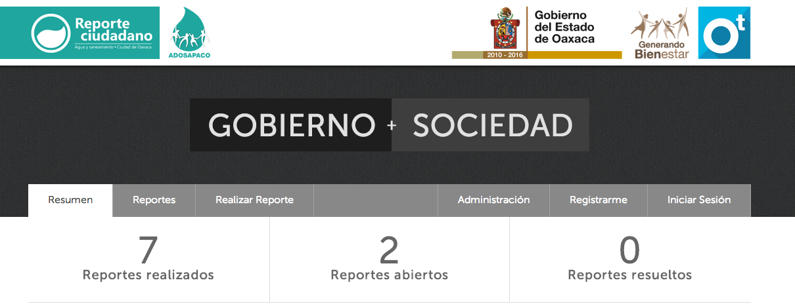

Apps que utilizan Reporte Ciudadano como plataforma.

Administración Directa de Obras y Servicios de Agua Potable y Alcantarillado de la Ciudad de Oaxaca (ADOSAPACO) es el órgano encargado de prestar los servicios de agua potable, drenaje sanitario y tratamiento de las aguas residuales eficientemente, con sentido de responsabilidad social y cumpliendo con estándares internacionales de calidad, en la ciudad de Oaxaca.